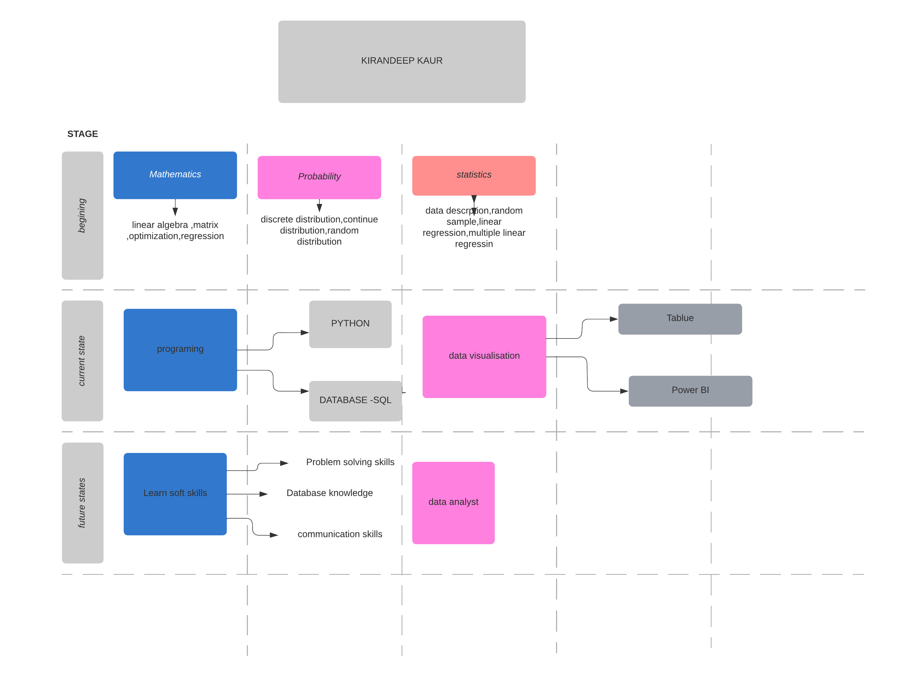

About Me
Let me tell you a few things . .
BIO
Hi, I am Kiran and I love Data Science and Data Analysis. Statistics is my favourite Subject.
Skills
- Interpreting data
- analyzing results using statistical techniques
- Developing and implementing data analyses
- data collection systems and other strategies that optimize statistical efficiency and quality Acquiring data from primary or secondary data sources and maintaining databases
Tools I have used
- MS Word
- MS Excel
- Jupyter
- Power BI
- Tableau
Languages
- Python
- SQL
Education
Post Graduate Diploma in Data Analytics from Durham College